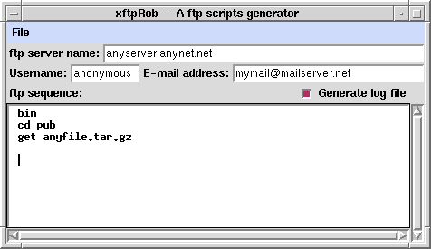

This is an small utility built on tcl/tk8.0 that generates a ftp script as explained in "Building an automatic ftp retriever" . This is a screenshot:

You simply put the requested information on the given fields. The "ftp sequence" corresponds to the data inside the "here" document passed to the ftp program. You don't need to put the ftp open (servername) and bye directives; xftpRob puts it for you.
To generate the script, you only need to select the "Save script" option in the "File" menu, give a name for the script and OK.
Download the code: xftpRob.tar.gz[8.6Kb]
Comments and suggestions, please email to aizquier@ciencias.ciencias unal.edu.co